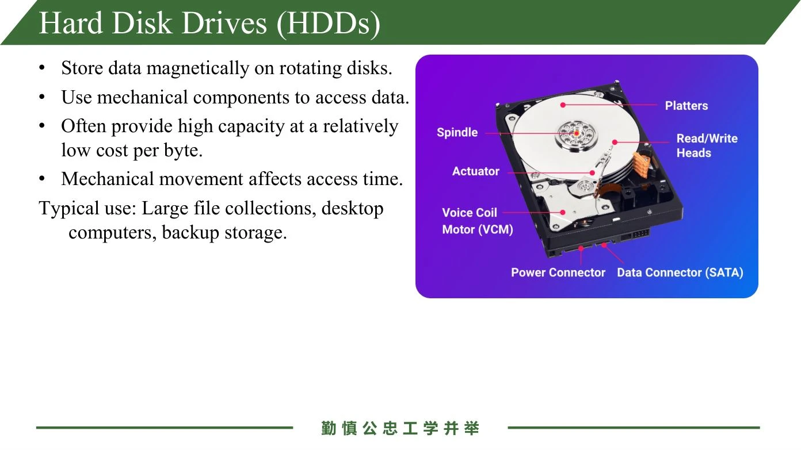
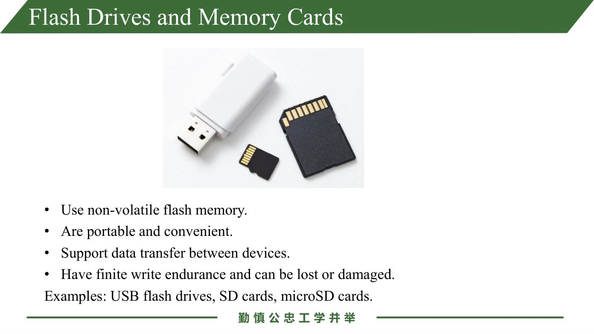
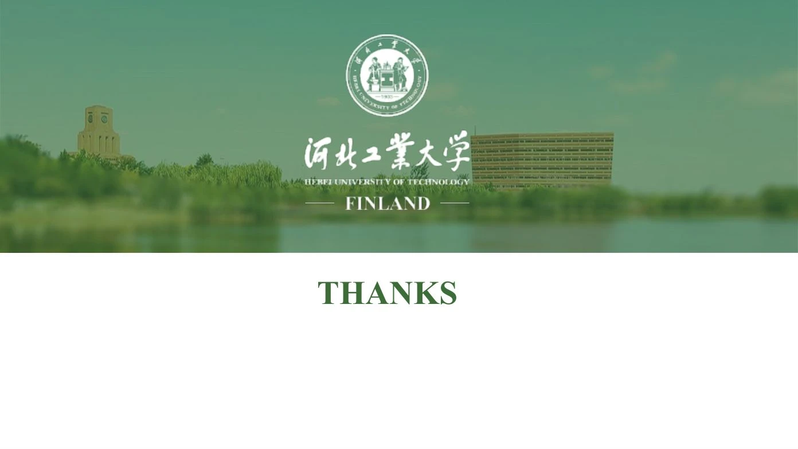
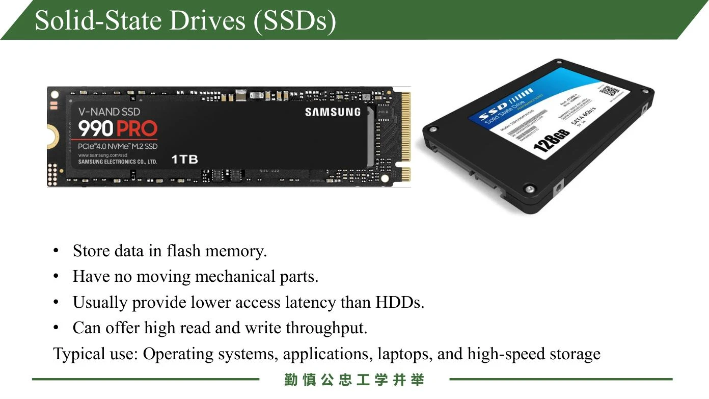
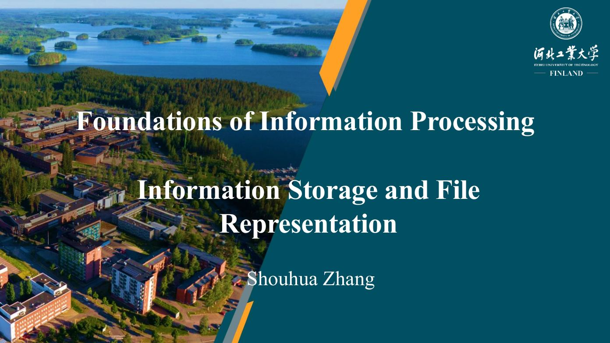

HDD5020 信息处理基础（计算机导论） · 第 08 / 12 讲
Week 8 · 信息存储与文件表示
Information Storage and File Representation
所属章节：第 4 章 信息存储、文件与检索
资料来源 · 2 项 / 已附 0 项
Week8- Information Storage and File Representation/Lecture8.pdf未附原文件Week9- Information Retrieval/Exercise 5.pdf未附原文件
未附文件仅列原始名称；版本与核对日期由维护者登记。
本节定位
前面几讲都在讲「数据怎样表示」，这一讲换一个角度：数据最后放在哪里、以什么形式组织。答案是「存在存储介质上，组织成文件」。这一步看似琐碎，却是所有计算机使用的起点——你打开的任何东西，都是一个文件。
本讲要建立三个区分：内存与存储（易失 vs 持久）、十进制单位与二进制单位（MB vs MiB）、文件格式与内容（扩展名只是标签）。三个区分都直接对应现实中的误解：以为关机不丢数据、以为 1 TB 就是 1000 GB 可用、以为把 .jpg 改成 .txt 就变成了文本。
与前几讲的衔接：第 4 讲讲「字符 → 字节」，本讲讲「字节 → 文件 → 目录 → 设备」；与下一讲的衔接：第 9 讲要在一大堆文件里找信息，那就必须先有「文件」这个概念，还要有索引。
学完本讲你应当能够：
- 区分内存（RAM）与存储（SSD/HDD），并说明易失与非易失的含义
- 在 KB 与 KiB、MB 与 MiB 之间正确换算，并说明厂商标称容量的口径
- 说明存储层次中「越往下容量越大、延迟越高」的规律
- 比较 HDD、SSD、U 盘、SD 卡、光盘、云存储的适用场景
- 说明「文件是字节序列」的含义，并解释同一字节串为何可以有不同解释
- 区分文件内容与元数据，说出至少四项元数据
- 说明扩展名、文件格式、编解码器、容器四者的关系
- 解释备份与冗余的区别，以及为什么二者不能互相替代
一、从数字数据到被存储的信息
1.1 四种文件，一种本质
课件先把前几讲的成果并列：
| 文件类型 | 里面存的是什么 |
|---|---|
| 文本文档 | 编码后的字符 |
| 图像文件 | 与像素相关的数据 |
| 音频文件 | 数字音频信息 |
| 程序文件 | 指令与相关数据 |
课件的关键句：不同类型的信息都可以存成位和字节。这是第 1 讲「一切都能变成 0/1」的最终落地。
1.2 为什么需要存储
课件列了五条理由：
- 让程序与数据随时可用
- 把工作保存下来供以后使用
- 存储大量信息
- 在应用与设备之间共享数据
- 让信息在关机之后仍然保留
课件还留了一个反问：如果计算机不能永久保存数据，会怎样？答案很直接——每次开机都要重新输入一切，程序无法安装，历史无法累积。整个「计算」的意义都会消失。
二、内存与存储
2.1 一张对照表
| 对照项 | 内存（RAM） | 存储（SSD / HDD） |
|---|---|---|
| 存什么 | 当前正在使用的数据 | 留待以后使用的数据 |
| 易失性 | 通常是易失的（volatile） | 非易失（non-volatile） |
| 速度 | 通常更快 | 相对较慢 |
| 容量与持久性 | 通常较小 | 通常更大且持久 |
课件补了一句限定：在计算机体系结构里 memory 一词含义更广，这里主要以 RAM 为例。这个限定很重要——严格说 cache 也是 memory，但本节要对比的是「工作区 vs 仓库」。
2.2 易失与非易失
易失（volatile）：断电后数据通常消失。非易失（non-volatile）：不需要持续供电也能保留数据。
| 介质 | 易失性 |
|---|---|
| RAM | 易失 |
| SSD | 非易失 |
| HDD | 非易失 |
| USB 闪存盘 | 非易失 |
课件留了一个小问题：RAM 适合作为保存学生论文的唯一位置吗？显然不适合——断电、崩溃、关机都会让论文消失。正确做法是「在 RAM 里编辑，随时保存到存储介质，并保留备份」。
三、存储单位
3.1 位与字节
课件先复习最小的两级：位（bit，b）是最小单位，取值 0 或 1；字节（byte，B）是 8 位一组。例：01000001 = 8 位 = 1 字节。
课件加粗提醒：b 表示 bit，B 表示 byte。这两个字母的大小写差别会带来 8 倍的误会。
3.2 十进制单位（厂商口径）
| 单位 | 含义 |
|---|---|
| 1 KB | 1 000 字节 |
| 1 MB | 1 000 KB |
| 1 GB | 1 000 MB |
| 1 TB | 1 000 GB |
课件说明这是存储厂商常用的十进制单位。所以标称 512 GB 的硬盘，就是 512 × 10^9 字节。
3.3 二进制单位（操作系统口径）
| 单位 | 精确大小 |
|---|---|
| 1 KiB | 1 024 字节 |
| 1 MiB | 1 024 KiB |
| 1 GiB | 1 024 MiB |
| 1 TiB | 1 024 GiB |
课件的提示句：KB 与 KiB 并不完全相等，MB 与 MiB 也不完全相等；计算前先确认题目用的是哪种单位。
10^12 / 1024^4 ≈ 0.909 TiB。于是 1 TB 硬盘在系统里显示约 931 GiB。这不是「缺斤少两」，而是两种口径。3.4 文件大小的大致感觉
课件给了四个参照：
- 短文本文件：几 KB
- 高分辨率照片：几 MB
- 一首歌：几 MB 或更多
- 一部电影：几 GB 或更多
课件补了一句：实际大小取决于内容、格式与压缩方式。这句话把第 7 讲接上了——同样的画面，PNG 与 JPEG 差好几倍。
3.5 换算的两个式子
若文件有 N 字节：
十进制：大小（KB）= N / 1000 二进制：大小（KiB）= N / 1024
课件的例子：文件 12 288 字节。
十进制：12 288 / 1000 = 12.288 KB
二进制：12 288 / 1024 = 12 KiB两个结果都「对」，只是口径不同。注意 12 288 = 12 × 1024，所以二进制换算是干净的整数；这也是「挑数」的常见手法。
3.6 容量与文件大小
课件区分两个概念：存储容量是设备能装多少；文件大小是某个文件需要多少空间。例：512 GB 的 SSD 与 25 MB 的图片集。
一个设备可以装很多文件，但受可用容量与文件系统限制。「文件系统限制」这句提示很实在：单个文件可能有上限（如 FAT32 单文件 4 GB），文件数也可能有上限。
四、存储的层次
计算机用不同技术满足不同需求。课件给的规律是：越往下，容量越大、每字节成本越低，但访问延迟通常越高。
| 层次 | 特点 | 典型规模 |
|---|---|---|
| CPU 寄存器 | 极快、极小 | 几十到几百字节 |
| CPU 缓存（cache） | 很快、较小 | 几 MB |
| 主存（RAM） | 较快的工作区 | 几 GB 到几十 GB |
| SSD / HDD | 持久、大容量 | 几百 GB 到几 TB |
课件特意声明这是一个概念性层次，不是对每个设备的精确排名。这句话是对的：NVMe SSD 的延迟已经远低于机械硬盘，某些场景甚至接近内存，但「寄存器 > cache > RAM > 外存」这个量级顺序仍然成立。
五、存储介质
5.1 机械硬盘（HDD）
- 用磁记录方式把数据存在旋转的盘片上
- 靠机械部件访问数据（磁头寻道、盘片旋转）
- 通常容量大、每字节成本低
- 机械运动影响访问时间
典型用途：大量文件、台式机、备份存储。
5.2 固态硬盘（SSD）
- 把数据存在闪存（flash memory）里
- 没有移动的机械部件
- 通常访问延迟更低
- 能提供高读写吞吐
典型用途：操作系统、应用程序、笔记本、高速存储。
5.3 HDD 与 SSD 对比
| 特性 | HDD | SSD |
|---|---|---|
| 技术 | 磁盘（磁记录） | 闪存 |
| 运动部件 | 有 | 无 |
| 访问延迟 | 通常更高 | 通常更低 |
| 每字节成本 | 通常更低 | 通常更高 |
| 常见优势 | 单位成本容量 | 速度与响应 |
这条对比解释了现实中的组合方案：系统盘用 SSD 求快，资料盘用 HDD 求容量。
5.4 U 盘与存储卡
- 用非易失闪存
- 便携、方便
- 支持设备间传输数据
- 写入寿命有限，且可能丢失或损坏
例子：USB 闪存盘、SD 卡、microSD 卡。
5.5 三种闪存设备的对比
| 特性 | SSD | U 盘 | SD 卡 |
|---|---|---|---|
| 存储技术 | NAND 闪存 | NAND 闪存 | NAND 闪存 |
| 连接方式 | SATA 或 PCIe/NVMe | USB 接口 | 读卡器或卡槽 |
| 读写速度 | 通常最高（尤其 NVMe） | 差异大，通常远低于 SSD | 取决于速度等级，通常远低于 SSD |
| 访问性能 | 低延迟、高吞吐 | 取决于控制器与 USB 接口 | 取决于速度等级与读卡器 |
| 耐久性 | 无运动部件，内置型号受外壳保护 | 无运动部件，接口可能裸露 | 无运动部件，卡片小易丢失或损坏 |
| 典型用途 | 系统、应用、大数据集 | 文件传输与便携存储 | 相机、手机、无人机、嵌入式 |
| 主要优势 | 高性能与大容量 | 方便、兼容性好 | 小巧、为便携设备设计 |
这张表值得记住的结构：三者技术同源（NAND 闪存），差别在接口与控制器。所以「U 盘能不能当系统盘」的答案不是「不能」，而是「通常不划算」——接口与主控决定了随机读写性能差距。
5.6 光盘
用光学技术存数据，包括 CD、DVD、蓝光（Blu-ray）。适当保存时可用于分发或长期归档，但需要兼容的光驱。
课件补了两条限定：并非所有光盘都可重写；光盘寿命取决于介质质量与保存条件。
5.7 云存储
云存储把数据放在远端设施上，通过网络访问。
| 优点 | 局限 |
|---|---|
| 可从不同设备访问 | 依赖网络与服务可用性 |
| 分享与协作更容易 | 可能有订阅费用 |
| 容量可扩展 | 需关注隐私、访问控制与服务条款 |
最后一条是本课的安全伏笔：数据放在别人的机器上，「访问控制」与「服务条款」就是你必须读的部分。第 5 章讲加密时会回到这一点。
5.8 怎样选存储设备
课件列了七个考虑因素：
容量 访问速度与延迟 成本 便携性 可靠性与耐久性 功耗 安全与备份需求并给了两个例子：笔记本系统盘受益于 SSD；大型媒体归档则优先考虑容量与成本。
六、什么是文件
6.1 定义
文件（file）是由操作系统或其他存储系统管理的、有名字的数据单元。
一个文件里可能有：文本、数值数据、图像或音频数据、程序指令、结构化记录。文件提供了保存、取回、复制、分享数据的便利方式。
定义里三个要素要抓住：有名字（否则无法引用）、有管理主体（操作系统）、是一个单元（可作为整体复制、删除、移动）。
6.2 文件是字节序列
在最底层，文件可以看成一串字节。课件的例子：
01001000 01101001 00100001
三个字节：十六进制 48 69 21在 ASCII 兼容的文本编码下，这三个字节表示 Hi!。
课件加了一句关键话：光有字节不能说明数据是什么意思，我们需要一种解释。这与第 4 讲的「字节不知道自己是什么编码」是同一个意思，只是扩大到了「文件类型」层面。
6.3 同一字节，不同含义
课件取一个字节 01000001，指出它可能是：
- ASCII 字符 A
- 无符号整数 65
- 某个更大的二进制数据结构中的一个值
解释取决于格式与上下文。课件强调：字节序列没有唯一的含义（"A byte sequence does not have one universal meaning"）。
6.4 文本文件与二进制文件
| 类型 | 内容 | 例子 | 用文本编辑器打开 |
|---|---|---|---|
| 文本文件 | 用字符编码存的字符 | .txt、.csv、.html、.json | 正常显示（编码正确时） |
| 二进制文件 | 不打算被当普通文本直接读的数据 | JPEG 图像、MP3 音频、可执行程序、科研数据文件 | 可能出现不可读的符号 |
课件强调：二进制文件仍然是字节，只是它的结构需要合适的解释方式。所以「文本 vs 二进制」不是两种物理存储，而是两种约定。
6.5 文件不只是内容
一个文件还关联着：名字、位置或路径、大小、创建/修改时间戳、访问权限、文件类型或格式。
课件指出：其中一些信息存在文件系统的元数据里，而不在文件本身内部。并留了一个反问：文件名一定是文件内容的一部分吗？答案是否——改名不改内容，正是下一节「改名不换格式」的基础。
6.6 打开一个文件的四步
- 用户选中一个文件
- 应用程序读取它的字节
- 应用程序按预期的格式解释这些字节
- 应用程序显示或处理数据
课件补了一句：若应用用错格式，或文件损坏，结果可能不对，或根本打不开。这四步是所有「文件打不开」问题的排查框架。
七、文件格式
7.1 定义
文件格式规定数据在文件里怎样组织与解释。一个格式可能规定：
- 文件的结构
- 值怎样表示
- 不同数据段放在哪里
- 数据应当怎样解释
例子：TXT、CSV、PNG、JPEG、WAV、PDF。
7.2 扩展名
文件扩展名是常用的类型标记后缀，如 notes.txt、data.csv、photo.png、report.pdf。扩展名帮用户与系统选择合适的应用。
课件加粗提醒：扩展名只是标签，不保证文件实际内容。
7.3 改名不会改变格式
课件的例子：把 photo.jpg 改名为 photo.txt。改名只改了名字，并没有把 JPEG 数据变成文本。要真正改变格式，应用必须读取并转换数据。
课件把区分写成两行：改名改变的是文件名；转换改变的是数据表示。
7.4 文件签名与头部
许多格式在文件开头附近带识别信息，可称文件签名（file signature），或属于文件头（header）的一部分。例子：
- PNG 文件以一个确定的签名开始
- PDF 文件通常以
%PDF-开头 - 其他格式各有自己的标识字节模式或结构
应用可以用这些信息帮助识别与解释文件。课件加了两条限定：并非每种格式都有简单的签名；有签名也不等于文件有效或安全。
7.5 元数据
元数据（metadata）是描述其他数据的数据。课件给了四类例子：
| 对象 | 元数据例子 |
|---|---|
| 图像 | 宽、高、颜色信息、拍摄时间 |
| 音频 | 时长、采样率、声道数 |
| 文档 | 作者、标题、创建时间 |
| 文件系统 | 大小、时间戳、权限 |
元数据能帮应用解释、组织、搜索与管理数据。第 9 讲的检索、第 5 讲的隐私问题都会用到它。
7.6 内容与元数据
以一张照片为例：
| 类别 | 内容 |
|---|---|
| 内容（content） | 用来重建画面的编码图像数据 |
| 元数据（metadata） | 图像尺寸、拍摄日期、相机设置（若记录）、位置信息（若有） |
元数据可以嵌在文件里，也可以单独存放。
课件留了一个讨论题：为什么用户会在分享照片前删除位置元数据？因为地理坐标会暴露住址、行程、作息；这类信息与照片本身无关，却会长期泄漏隐私。第 5 章讲「加密不是安全的全部」时，这是同一类问题的另一面。
7.7 格式、编解码器、容器
| 概念 | 定义 | 例子 |
|---|---|---|
| 文件格式（file format） | 规定信息在文件中怎样结构化 | TXT、CSV、PNG |
| 编解码器（codec） | 编码与解码特定类型的媒体数据 | H.264（视频）、AAC（音频） |
| 容器（container） | 把媒体流与相关信息打包在一起 | MP4、MKV |
课件给的例子：MP4 常用作媒体容器，H.264 是视频编码标准，AAC 是音频编码格式；一个 MP4 文件里可以有 H.264 编码的视频与 AAC 编码的音频。
课件强调三者相关但不能互换。这条区分直接来自第 6 讲的「格式 ≠ 编解码器」，本讲把它补全成三方关系。
7.8 格式为什么重要
文件格式影响：应用之间的兼容性、支持的数据类型与特性、存储大小与可用的压缩、原始数据能否被精确恢复、长期可访问性。
课件的例子：CSV 适合简单表格数据；大型科研数据集可能更适合专门的二进制格式。
「长期可访问性」这一条最容易被忽略：用冷门格式存的数据，十年后可能没有软件能打开。这也是归档领域偏好开放、简单格式的原因。
八、目录与文件操作
8.1 为什么组织文件
没有组织就很难找到某个文件。目录（directory，常称文件夹）帮用户：
- 把相关文件分组
- 建立层次结构
- 避免无谓的杂乱
- 更容易定位与管理文件
课件的例子分组：Documents、Images、Projects、Backups。
8.2 层次结构
一个目录可以包含文件与其他目录，于是形成层次（hierarchy）。这个结构就是数据结构里的「树」——第 1 讲列过 Tree 这一项，这里是它的日常形态。
8.3 常见操作
课件列了七种：
create open and read write and save rename copy move delete课件提醒不同操作效果不同：复制文件通常会多出一个副本；移动文件改变的是位置或目录项。
这句「移动改变的是目录项」很精确：在同一分区内移动通常不搬数据，只改指向；跨分区移动才是真的复制再删除。这也解释了「移动大文件很快、复制大文件很慢」的现象。
8.4 良好实践
- 用有意义的文件名
- 按项目或用途分组
- 把相关数据与文档放在一起
- 避免
final_final2_new这类含混名字 - 为重要文件保留备份
课件给了一个具体的目录例子：
BearingStudy/RawData/
BearingStudy/ProcessedData/
BearingStudy/Results/这个例子的价值在于「按数据流阶段分组」：原始数据、处理后数据、结果分开，任何一步出错都能回溯。
九、访问速度
9.1 影响什么
访问性能影响：应用启动时间、加载大数据集、检索记录、视频播放与流式传输、训练机器学习模型。
9.2 延迟与吞吐
| 指标 | 定义 | 类比 |
|---|---|---|
| 延迟（latency） | 操作开始返回有用结果之前的时间 | 点菜到上第一道菜的等待 |
| 吞吐（throughput） | 单位时间传输的数据量 | 每分钟能上几道菜 |
课件给了一个反直觉的提醒：吞吐高的设备，对小而分散的请求仍可能有明显延迟。这解释了为什么大文件拷贝很快、而打开一堆小文件很慢——后者受延迟支配。
十、存储的数据为什么会丢
10.1 六种原因
- 硬件故障
- 误删除
- 软件错误
- 恶意软件或勒索软件
- 断电或环境损坏
- 失去对在线服务的访问
课件的关键句：保存一次并不保证永远可用（"Saving a file once does not guarantee that it will always be available"）。
10.2 备份与冗余
课件把两个容易混的概念分开：
| 概念 | 定义 |
|---|---|
| 备份（backup） | 分开保存的另一份副本，用于在丢失或损坏后恢复 |
| 冗余（redundancy） | 额外维护数据或部件，以提高可用性或可恢复性 |
课件强调二者不相同：
- RAID 冗余能容忍某些硬盘故障
- 但它未必能防误删除、勒索软件，或影响整个系统的灾难
- 单独的备份提供另一条恢复路径
良好实践：把重要备份与主数据分开保存。放在同一台机器、同一个房间、同一个账号下的「备份」，遇到火灾、进水、勒索软件会一起消失。
十一、课件复习题（附答案）
- 文件 5 242 880 字节，求 MiB 与十进制 MB。
- RAM 与 SSD 哪个易失？HDD 与 SSD 哪个通常没有运动部件？哪个适合跨设备通过互联网访问文件？
- 解释三句话为什么错：「每个文件都是文本文件」「把 .jpg 改成 .txt 就把图像变成文本」「同一字节序列总是同一含义」。
- 一张照片含图像数据、尺寸、拍摄时间。指出哪些是重建图像所需的内容、两项元数据、一个分享前删除元数据的理由。
这四道题的完整解答在本讲例题与练习里；核心口径是：5 242 880 / 1 048 576 = 5 MiB、/ 10^6 ≈ 5.24 MB。
十二、场景练习：选格式
| 任务 | 合适的选择 |
|---|---|
| 纯笔记 | TXT |
| 简单表格数据 | CSV |
| 照片 | JPEG 或 PNG，取决于需求 |
| 需一致显示的文档 | |
| 要精确恢复样本的音频 | FLAC 等无损格式 |
| 视频分发 | 合适的容器 + 编解码器组合 |
课件的结论：最佳选择取决于兼容性、体积、质量，以及是否需要精确恢复。这与第 7 讲「压缩是应用相关的」是同一条道理。
原版图页（源 PDF 插图页）








| English | 中文 | 说明 / 例句 |
|---|---|---|
| memory (RAM) | 内存 | Holds data currently in use; usually volatile. |
| storage | 存储 | Keeps data for later use; non-volatile, typically larger. |
| volatile | 易失的 | Data normally disappears when power is lost, e.g. RAM. |
| non-volatile | 非易失的 | Data remains without continuous power, e.g. SSD, HDD, USB flash. |
| bit / byte | 位 / 字节 | b means bit, B means byte; 8 bits = 1 byte. |
| KiB / MiB | 二进制单位 | 1 KiB = 1 024 bytes; 1 MiB = 1 024 KiB. |
| storage hierarchy | 存储层次 | Registers → cache → RAM → SSD/HDD; lower levels are larger, cheaper per byte and slower. |
| HDD | 机械硬盘 | Magnetic rotating disks with moving parts; low cost per byte. |
| SSD | 固态硬盘 | Flash memory with no moving parts; low latency and high throughput. |
| file | 文件 | A named unit of data managed by the operating system. |
| file format | 文件格式 | Defines how data is organized and interpreted in a file. |
| file signature | 文件签名 | Identifying bytes near the start of a file, e.g. %PDF-. |
| metadata | 元数据 | Data that describes other data: size, timestamps, author, dimensions. |
| container | 容器 | Packages media streams and metadata together, e.g. MP4. |
| latency and throughput | 延迟与吞吐 | Time before results start versus data transferred per unit time. |
| backup and redundancy | 备份与冗余 | A separate copy for recovery versus extra data or components for availability. |
MiB：5 242 880 / 1 048 576 = 5 MiB（正好整除，因为 5 242 880 = 5 × 1024 × 1024）。
十进制 MB：5 242 880 / 1 000 000 ≈ 5.24 MB。
两个答案都对，取决于口径。若题目写「MB」且给出「1 MB = 10^6 字节」，就用 10^6；若写「MiB」或用 1024，就用 1 048 576。
顺便算 KiB：5 242 880 / 1024 = 5 120 KiB。三级单位一次算清，是这类题的推荐做法。
48 69 21（十六进制）是什么？如果把同一个文件当 32 位整数读，第一个值是多少？第一步，按 ASCII 解释：0x48 = 72 = H、0x69 = 105 = i、0x21 = 33 = ! → 文本 Hi!。
第二步，按 32 位小端整数解释：取前四个字节需要补一个字节，假设文件只有三字节则读不完整；若后续还有字节，例如 48 69 21 00，按小端读得 0x00216948 = 2 189 640，按大端读得 0x48692100 = 1 214 849 280。
这说明两件事：① 同一串字节的解释取决于「用什么规则」；② 连「字节顺序」（大端/小端）也需要额外约定。
这道题的答题要点不在具体数值，而在说清「解释规则」这一层——这正是课件那句「字节序列没有唯一含义」的具体化。
MP4 是容器：它规定「怎样把多条流与元数据打包进一个文件」，本身不规定画面怎么压。
里面可能有：视频流（例如用 H.264 编码）、音频流（例如用 AAC 编码）、元数据（时长、分辨率、创建时间、字幕轨、封面图）。
关系：容器 = 箱子，编解码器 = 箱子里物品的压缩方式。同一个 MP4 可以装 H.264+AAC，也可以装 H.265+AAC；同一个 H.264 视频也可以封进 MKV 或 WebM。
为什么这个区分有用：「MP4 播放不了」可能是容器不兼容，也可能是解码器缺失；「转成 MP4」可能只是换容器（无损、很快），也可能是重编码（有损、很慢）。分不清就会做出错误的技术判断。
RAID 1 提供了什么：两块盘互为镜像，一块坏了另一块还能读，于是「单盘故障」不会导致停机或数据丢失。这属于冗余。
它没有提供什么：误删除会同时作用于两块盘；勒索软件加密的是文件系统层的文件，镜像会同步被加密；整机失火、进水、被盗会同时毁掉两块盘；管理员误操作同样穿透镜像。
结论：这不是一个合格的备份方案，只是「高可用」方案。备份的核心特征是与主数据分离（不同设备、不同位置、最好不同权限/账号），并且要有历史版本以便回滚。
改进：保留异地或离线的第二份副本；对备份做定期恢复演练（没验证过的备份不算备份）；对关键数据保留多个时间点版本。
- 一个 8 GB 的 U 盘能装多少个 2 GB 的文件？若每个文件实际占 2.1 GB 呢？
- 厂商标称 1 TB 的硬盘，按二进制单位算约多少 TiB？在系统里大致显示为多少 GiB？
- 为什么把
report.jpg改成report.txt不会得到文本文件？请从「数据表示」角度解释。 - RAID 1 与「备份」有什么区别？请举一个 RAID 挡不住、备份能救的场景。
- 算 1920 × 1080、24 位 RGB 未压缩图像的 MiB 数，并说明它在内存里会占多少。
- 下列各项哪些属于元数据：图像的宽高、像素值本身、拍摄时间、文件大小、作者、修改时间？
参考答案与思路
1. 8 / 2 = 4 个。若每个 2.1 GB，则 8 / 2.1 ≈ 3.8 → 只能装 3 个（不能装 4 个，因为没有 8.4 GB）。另外实际可用容量小于标称，系统文件也占空间，实际更少。
2. 1 TB = 10^12 字节；10^12 / 1024^4 ≈ 0.909 TiB；在按 TiB/GiB 显示的系统中约 0.909 × 1024 ≈ 931 GiB。这就是「1 TB 硬盘只有 931 GB」的来源。
3. 改名只改变文件名（元数据的一部分），文件里的字节一点没变，仍然是 JPEG 的压缩数据。格式由数据的组织结构决定，不由名字决定。要真正变成文本，必须解码 JPEG 得到像素，再以某种文本形式（如每像素的数值）重新写出——那是转换，不是改名。
4. RAID 1 是冗余：它保证「一块盘坏」时数据仍可读。备份是独立副本：它保证「数据被错误改写或删除」后还能回到从前。RAID 挡不住、备份能救的典型场景：误把整个项目目录删了（两块盘同步删除），或勒索软件把所有文件加密（镜像同步加密）。
5. 1920 × 1080 × 3 = 6 220 800 字节；/ 1 048 576 ≈ 5.93 MiB。在内存里通常按整块缓冲存放，可能还有对齐与额外通道（如 alpha），实际占用 ≥ 5.93 MiB。
6. 属于元数据：宽高、拍摄时间、文件大小、作者、修改时间。不属于：像素值本身——那是内容，是重建图像所必需的数据。判据：删掉它，还能不能重建原对象？能 → 元数据；不能 → 内容。
| 考点 | 要点 |
|---|---|
| 内存 vs 存储 | 易失 vs 非易失；RAM 不能作为唯一保存位置 |
| 单位换算 | KB/MB/GB/TB 用 1000；KiB/MiB/GiB/TiB 用 1024；b 与 B 差 8 倍 |
| 存储层次 | 越往下容量越大、每字节越便宜、延迟越高 |
| 介质对比 | HDD 有机械部件、单位成本低；SSD 无部件、延迟低；三者闪存差别在接口与主控 |
| 文件本质 | 有名字、由 OS 管理的数据单元；底层是字节序列，解释依赖格式 |
| 格式 vs 扩展名 | 扩展名只是标签；改名不换格式；签名与头部才是可靠判据 |
| 内容 vs 元数据 | 内容用于重建对象；元数据描述对象（尺寸、时间、作者、权限） |
| 格式 / codec / 容器 | MP4 是容器，H.264 是视频 codec，AAC 是音频 codec |
| 延迟 vs 吞吐 | 小文件多受延迟影响，大文件多受吞吐影响 |
| 备份 vs 冗余 | 备份要分离且可回滚；RAID 不能替代备份 |
方法清单
换算存储单位（三步）
- 先确认口径：1000（十进制）还是 1024（二进制）
- 分清 b（位）与 B（字节），需要时乘除 8
- 逐级换算并标注单位：KB/MB/GB 或 KiB/MiB/GiB
判断一个文件到底是什么（四步）
- 看扩展名（只是线索，不是证据）
- 看文件签名字节（PNG、PDF 等格式有固定开头）
- 用匹配的应用尝试打开，观察是否报错
- 必要时按十六进制查看前若干字节，人工核对
区分内容与元数据（一问）
- 删掉它还能重建原对象吗？能 → 元数据；不能 → 内容
- 图像的宽高、拍摄时间、作者、权限 → 元数据
- 像素值、字符数据、音频样本 → 内容
设计一个可靠的保存方案（四步）
- 工作副本放在存储介质上（不要只留在 RAM）
- 保留历史版本，便于回滚误改
- 备份与主数据分离（设备、位置、账号）
- 定期做恢复演练，验证备份真的能用
| 源文件 | 位置 | 覆盖的知识点 |
|---|---|---|
| Week8- Information Storage and File Representation/Lecture8.pdf | p2–p5 | 四个关键问题、四类文件都是字节、为什么需要存储的五条理由与反问 |
| Week8- Information Storage and File Representation/Lecture8.pdf | p4–p6 | 内存与存储对照、易失与非易失、RAM 能否作为唯一保存位置的讨论 |
| Week8- Information Storage and File Representation/Lecture8.pdf | p7–p12 | 位与字节（b vs B）、十进制单位表、二进制单位表、文件大小参照、N/1000 与 N/1024、12 288 的例子、容量与文件大小 |
| Week8- Information Storage and File Representation/Lecture8.pdf | p13 | 存储层次：寄存器 → cache → RAM → SSD/HDD，容量/成本/延迟的规律 |
| Week8- Information Storage and File Representation/Lecture8.pdf | p14–p18 | HDD 的磁记录与机械部件、SSD 的闪存与无部件、HDD/SSD 对比表、U 盘与存储卡、SSD/U 盘/SD 卡三方对比 |
| Week8- Information Storage and File Representation/Lecture8.pdf | p19–p22 | 光盘（CD/DVD/蓝光的限制）、云存储的优点与局限、选择设备的七个因素、存储技术配对小测 |
| Week8- Information Storage and File Representation/Lecture8.pdf | p23–p30 | 文件的定义、文件是字节序列（48 69 21 = Hi!）、同一字节的不同解释、文本文件与二进制文件、文件不只内容、打开文件四步、文件表示小测 |
| Week8- Information Storage and File Representation/Lecture8.pdf | p31–p38 | 文件格式的定义、扩展名、改名不换格式、签名与头部（PNG、%PDF-）、元数据四类、内容与元数据、格式/codec/容器、格式为什么重要 |
| Week8- Information Storage and File Representation/Lecture8.pdf | p39–p45 | 为什么要组织文件、目录层次、七种文件操作、良好命名与分组、BearingStudy 目录例、访问速度的影响因素、延迟与吞吐、数据丢失的六种原因、备份与冗余 |
| Week8- Information Storage and File Representation/Lecture8.pdf | p46–p50 | 四道复习题（MiB/MB、存储技术选择、三句错话、内容与元数据）、五种任务选格式的对照表 |
| Week9- Information Retrieval/Exercise 5.pdf | 第 1 题 | 文件元数据与内容的区别与两项元数据举例（本讲第七节与练习第 6 题已覆盖） |
| （补充） | — | 厂商容量与系统显示的差额推算、文件签名与扩展名不符的判断、同分区移动只改目录项、备份演练、冷门格式的长期可访问性，均为衔接性拓展 |